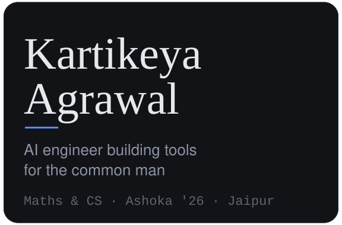
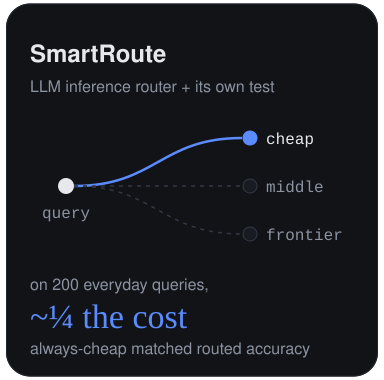
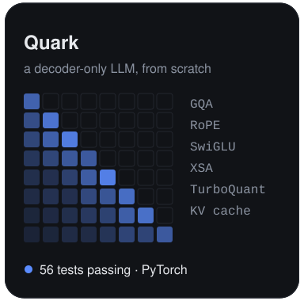
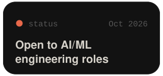
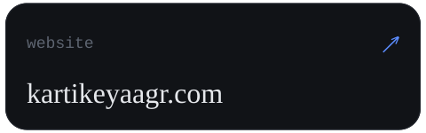
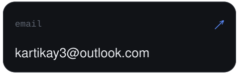

         
Most recently built the research desk for an Indian long-only fund (private).
Also: Media Bias Analysis, political lean and framing in Indian news.
Khana Thali Vision trains on the Khana dataset (arXiv:2509.06006) by Omkar Prabhu.